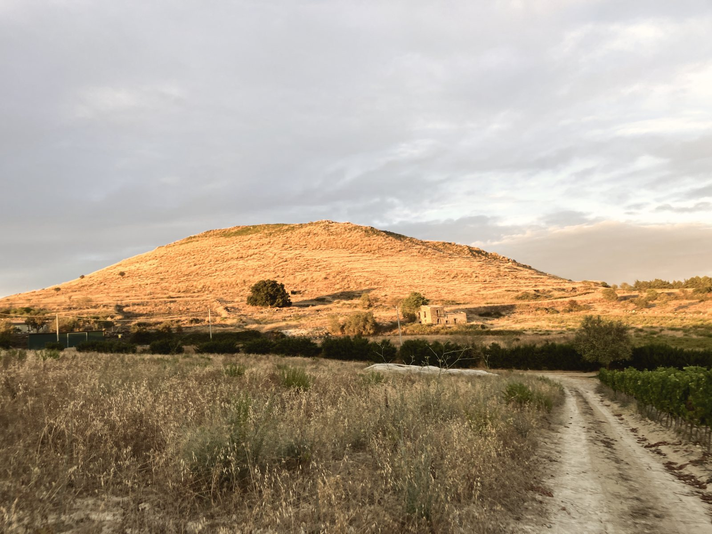

La nostra storia
Dopo trent’anni a Londra, il ritorno in Sicilia: un vecchio casale e una vigna che tutti avevano dimenticato.
Vincenzo Giordano e Margherita Palmieri li hanno restaurati entrambi. La vigna è a 620 metri accanto a Monte Altore, un vulcano spento, esposta a sud-est. Vitigni autoctoni siciliani, senza irrigazione da oltre dieci anni. Ogni grappolo è raccolto a mano. Prima vendemmia, 2011.
Biologico, certificato da ICEA, organismo di controllo autorizzato dal Ministero dell’Agricoltura. Nessun prodotto chimico di sintesi, nessun OGM.
